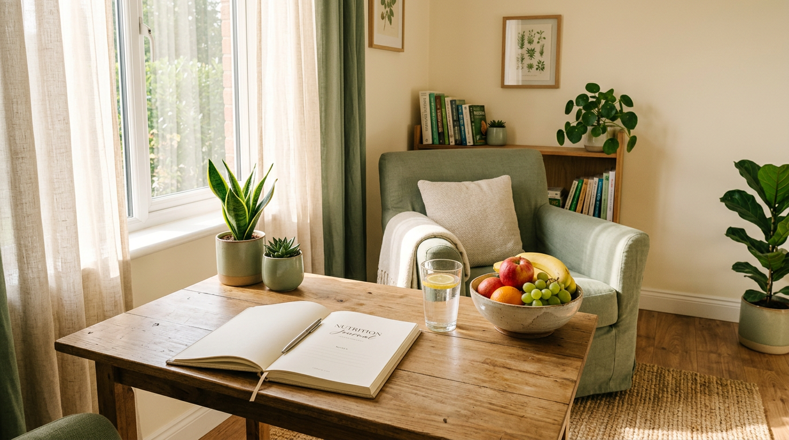

Sou nutricionista (CRN-X 00000) e acredito que a alimentação precisa fazer sentido para a sua
história, sua rotina e seus gostos. Por isso, cada plano é construído junto com você.
Ao longo de 12 anos, acompanhei mulheres, atletas e famílias que queriam mais energia, saúde e
uma relação mais tranquila com a comida. Meu papel é te guiar com clareza e sem culpa.
science
Baseada em evidências
Condutas atualizadas com a ciência da nutrição, sem modismos.
volunteer_activism
Sem terrorismo nutricional
Nenhum alimento é proibido. Aprendemos a comer com equilíbrio.
school
Formação sólida
Nutrição pela por universidade federal, pós em nutrição clínica e comportamento alimentar.
Atendimentos
Cuidado nutricional para cada momento da sua vida
Cada consulta é individual e começa entendendo seus objetivos, exames, rotina e preferências.
monitor_weight
Emagrecimento saudável
Perda de peso sustentável, sem dietas da moda e sem efeito sanfona.
local_florist
Saúde da mulher
SOP, TPM, menopausa, fertilidade e equilíbrio hormonal.
fitness_center
Nutrição esportiva
Performance, ganho de massa e recuperação para quem treina.
pregnant_woman
Gestação e lactação
Cuidado nutricional para você e para o bebê em cada fase.
stethoscope
Nutrição clínica
Diabetes, colesterol, hipertensão e saúde intestinal.
nutrition
Reeducação alimentar
Uma relação mais leve e consciente com a comida no dia a dia.
Como funciona
Um caminho simples, do primeiro contato aos resultados

01
Agendamento
Escolha o melhor horário, presencial em São Paulo ou online de qualquer lugar.
02
Primeira consulta
Anamnese completa, avaliação corporal, análise de exames e dos seus hábitos.
03
Plano personalizado
Você recebe um plano alimentar, receitas e lista de compras pensados para você.
04
Acompanhamento
Suporte pelo WhatsApp e retornos para ajustar o plano conforme sua evolução.
Depoimentos
Histórias de quem já transformou a rotina
format_quote
“Pela primeira vez emagreci sem sofrer. A Helena me ensinou a comer de verdade e hoje não tenho mais medo de comida.”
Mariana S.Emagrecimento · 14 kg em 8 meses
format_quote
“Meus sintomas de SOP melhoraram muito. O atendimento é humano, atencioso e super bem embasado.”
Juliana R.Saúde da mulher
format_quote
“Melhorei meu rendimento nos treinos e na corrida. O plano é prático e cabe perfeitamente na minha rotina corrida.”
Camila T.Nutrição esportiva
Dúvidas frequentes
Ficou alguma pergunta?
Se a sua dúvida não estiver aqui, é só me chamar no WhatsApp.
Como funciona a consulta online? add
A consulta é feita por videochamada, com a mesma duração e qualidade da presencial. Você recebe o plano alimentar e materiais por um aplicativo exclusivo.
Quanto tempo dura a primeira consulta? add
A primeira consulta dura cerca de 60 a 75 minutos. Os retornos duram em média 40 minutos.
Vou precisar cortar os alimentos que eu gosto? add
Não. O plano é construído a partir das suas preferências. O objetivo é equilíbrio, não restrição.
Você atende por convênio? add
Os atendimentos são particulares, mas emito recibo para que você solicite reembolso ao seu plano de saúde.
Preciso levar exames? add
Se tiver exames recentes (últimos 6 meses), leve ou envie antes da consulta. Caso não tenha, posso solicitar os necessários.
Pronta para cuidar de você com leveza?
Agende sua primeira consulta e dê o primeiro passo para uma alimentação que te faz bem.